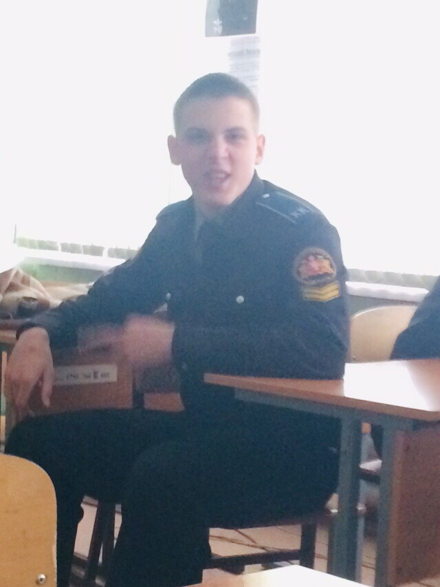

Познакомьтесь - Даниил Джафар. 19 лет, любит дотку, делать кэш, а также полностью отвергает противоположный пол. Находясь под градусами любит почесать языком и совершить пару подвигов, обещает на всех обидеться, но утром ничего не помнит. Косит под алоху, но скоро будет алоха косить под него. Отмечается умом но иногда бывают пробелы.
Идём дальше - Владимир Исак Исачитрус. 19 лет. Человек с которым можно найти общий язык на ЛЮБУЮ тему. Отмечается умением выслушать, понять, простить. Трудолюбив, но частенько присутствует синдром пофигизма. За халяву готов и горы свернуть. Добрый, позитивный (однако бывают периоды глубой философии и понятием бессмысленности жизни). Любит фарм забрать, да с двоечки прописать.
Спустя 4 года нашей близкой дружбы нам пришлось разъехаться в абсолютно разные города нашей большой страны.
Но это лишь дело
времени.
К сожалению, нам уже никогда не будет 15, 16, 17 лет, мы больше не сядем за парты лицея, мы не
поедем
в лагерь, на сборы, этого больше никогда не будет, всё это в прошлом. Остается лишь жить настоящим, жить
так, как нравиться нам самим, на то и дана она нам лишь раз. Так живите же в своё удовольствие, сделайте
так, чтобы ваше хобби превратилось в вашу работу, станьте
лучшим в
своём деле и именно тогда вы обретёте истинное
счастье.
Я верю что каждый из вас сможет найдет себе
свой путь, своё дело по душе и что каждые пол года (или хотя бы год) мы будем
собираться также
все вместе и вспоминать наши прекрасные юношеские годы и так же мечтать о чём-то великом и
прекрасном!
При дальнейшей разбаротке сайта, будут добавлены ещё май фэворит фрэндс, так как по срокам я не успеваю добавить их всех. А пока вы можете посмотреть на этого господина, полные характеристики которого будут доступны в новом обновлении!
Мы ждём ваши
предложения!